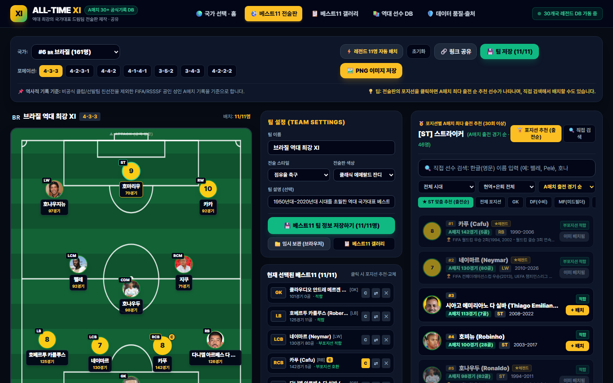
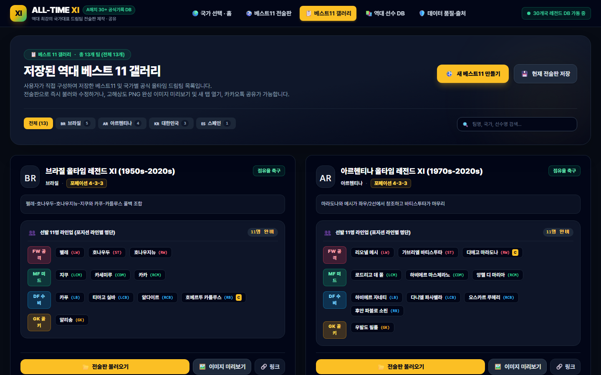

What this service is
"Who is the strongest best eleven of all time?" is the question football fans have argued over the longest. If you could put Pelé and Maradona, Zidane and Messi in one team, which eleven would you pick? That the same question can't have a single answer is where this project started.
All-Time XI puts a tactics board on top of a database of players with 30 or more senior caps per country. Pick a country, choose a formation and tap each position to place a player, and you have your own strongest team ever. Tapping a position suggests players in order of most senior caps, and you can also search and add one yourself.
The basis of the records is stated plainly too. Unofficial club and select-team friendlies are excluded; only senior international records recognized by FIFA and RSSSF are used.
Only some player photos were obtained; the rest are shown with placeholder avatars. Where cap counts differ by source, they are handled with notes.
What you can do
Pick one of the FIFA top 30 nations (as of 2026-10-07). The number of players included is shown for each country, and you can filter by confederation (UEFA, CONMEBOL, CONCACAF, CAF, AFC).
Choose a formation from 4-3-3, 4-2-3-1, 4-4-2, 4-1-4-1, 3-5-2, 3-4-3 and 4-2-2-2, and place a player at each position. There is also a button that auto-places eleven legends at once.
Save your team, share it by link, and download it as a high-resolution PNG image.
Browse the best XIs saved by users and each country's all-time dream team. Load one onto the board to edit it, or preview it as an image and share it on KakaoTalk.
Explore national-team players from the 1900s to the 2020s by caps ranking, goals ranking, position and era.
Discloses sources, the distribution by era (1900s to 2020s), registered players and position distribution by country, photo coverage, and notes on cap-count differences between sources.
Screen preview

Main — make a best XI

Tactics board — formation and placement

Gallery — saved best XIs

Data quality and sources
Data and criteria
The number of players shown on the service screen is around 3,800 and may be updated, so this page does not state the exact figure. The service states that cap-count differences between sources are handled with notes.
Things to know
Players with fewer than 30 senior caps are not included, and the player with the most caps is not necessarily the best player. Suggested players on the tactics board are based on senior cap counts and are not an evaluation of a legend's ability. Photos were obtained for only some players; the rest use placeholder avatars.
Your own best XI is a matter of taste, so there is no right answer. The service is a tool for checking records.
Technology and how it was made
Development status
The best XI tactics board, gallery, player DB and data quality and sources screens are all open (checked 2026-11-15). The FIFA ranking reference date is 2026-10-07.